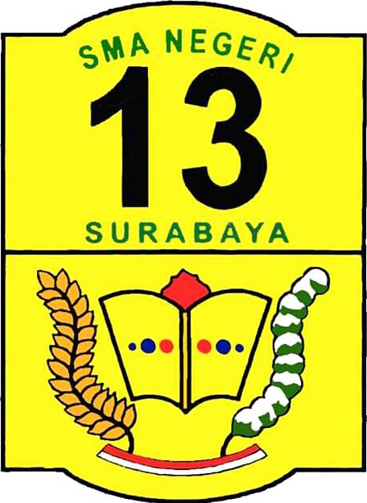
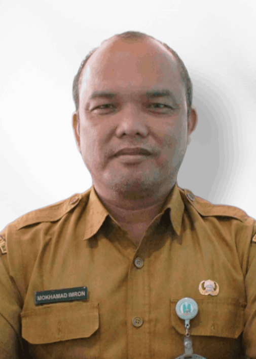
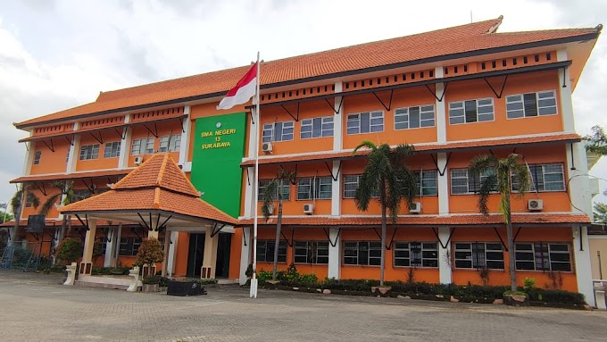

Seiring dengan bertambahnya jumlah siswa, pada tahun ajaran 1983-1984 hingga tahun ajaran 1984-1985 pelaksanaan pembelajaran diatur secara 2 shift, yaitu pagi pada pukul 07.00 – 12.30 WIB dan siang pada pukul 12.45 – 17.30 WIB. Bahkan pernah meminjam beberapa ruang di Kantor Kecamatan Lakarsantri (waktu itu masih berada di wilayah kelurahan Lidah Kulon) sebagai sarana pembelajaran. Pada periode ini, Ibu Sumartien, BA. menjabat sebagai Kepala Sekolah dibantu oleh beberapa guru tetap dan guru tidak tetap. Sedangkan beberapa guru dari SMA Negeri 6 Surabaya kembali mengajar di sana. Semenjak tahun ajaran 2007-2008, Pemerintah Kota Surabaya berupaya mengembangkan SMA Negeri 13 Surabaya melalui Program Pengembangan Sekolah Kawasan. Sehingga diharapkan terjadinya pemerataan mutu pendidikan di seluruh kawasan Surabaya, termasuk di kawasan Surabaya (wilayah SMA Negeri 13 Surabaya).

Mokhamad Imron, M.Pd.
SMAN 13 Surabaya merupakan salah satu sekolah menengah atas negeri di Kota Surabaya yang berkomitmen mencetak generasi berkarakter, berprestasi, dan berdaya saing global. Dengan lingkungan belajar yang kondusif dan tenaga pendidik profesional, SMAN 13 Surabaya terus mengembangkan potensi peserta didik baik di bidang akademik maupun nonakademik. Pembelajaran di SMAN 13 Surabaya mengedepankan penguatan literasi, numerasi, serta penguasaan teknologi sejalan dengan tuntutan zaman. Berbagai program unggulan dan kegiatan ekstrakurikuler aktif menjadi wadah siswa untuk mengasah minat, bakat, kreativitas, serta jiwa kepemimpinan. Dengan semangat kebersamaan seluruh warga sekolah, SMAN 13 Surabaya terus berinovasi dan bertransformasi menjadi sekolah yang adaptif, unggul, serta siap menghadapi tantangan masa depan.

"Terwujudnya insan berakhlak mulia, berprestasi, dan berbudaya lingkungan."